4 - Paged Memory¶
Keywords: Address types (physical, relative, virtual), address translation (page tables), virtual memory, swapping, paging, shared memory, memory use for OS, page replacement algorithms (OPT, LRU, FIFO, CLOCK).
Litterature¶
OSTEP Chapter 18, 19, 20, 21, 22, (23), 24
Kapitler med parenteser skimmes: (x)
Learning Goals¶
After Paged Memory you can:
- ... define and explain paging and how paged memory works
- ... perform simple address translation from paged (virtual) memory to physical memory
- ... explain how paged memory supports shared memory
- ... explain organisation of page tables (direct, two-level)
- ... define, explain, and discuss various page replacement algorithms and their pros and cons
Noter¶
Paging¶
Chopping up space into fixed size pieces.
Simple example:
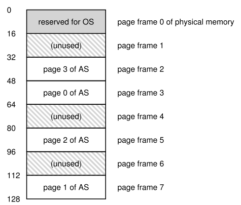
For at holde styr på virtual pages, OS holder en per-process data struktur kaldet page table.
- Holder address translations for hver virtual page
Virtuel adresse splittes op i virtual page number (VPN) og offset
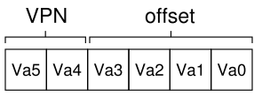
16 bit page. 2 bit vpn.
Vi indexer nu page table. Page 1 ligger i page frame 7 i ovenstående billede.
Dette er physical frame number (PFN) aka physical page number (PPN) 7.
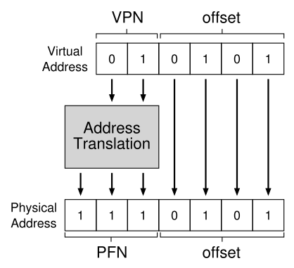
Page Tables¶
Page tables kan blive meget store. 32-bit adresse, 4KB pages.
Virtuel adresse splittes til 20-bit VPN og 12-bit offset.
20-bit VPN betyder 2^{20} translations. 4 bytes per page table entry (PTE) giver 4MB per page table!
Derfor er page tables ikke i MMU (hardware memory management unit)
- Vi holder page tables i memory.
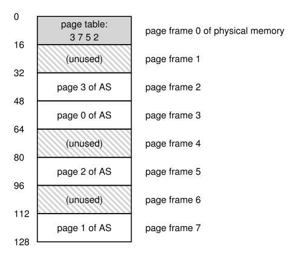
Linear Page Table¶
Simpelt array af page table entries (PTE). Indexes med VPN, for at finde PFN.
Page table entry¶
En valid bit er normalt. Indikerer om translation er valid.
- Eksempel, stack og heap der vokser mod hinanden. Alt imellem er invalid.
- Access af invalid lager generer trap.
Protection bits indikerer om page må læses fra, skrives til eller executes fra.
Present bit indikerer om denne page er i fysisk memory eller på disk.
- swapped out
Dirty bit indikerer om den er ændret siden den blev bragt til hukommelse.
Reference bit aka accessed bit: indikerer om en page har været tilgået
- buges i page replacement
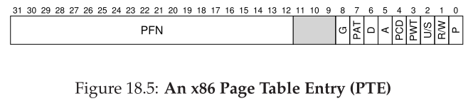
(P) present bit, (R/W) read/write, (U/S) user/supervisor, (PWT, PCD, PAT, G) bruges i hardware caching system, (A) accessed, (D) dirty bit, (PFN).
Translation¶
Lad os sige at page-table base register indeholder den fysiske adresse på start lokationen for page table. Giver os:
1 2 3 4 5 6 7 8 9 | |
Translation Lookaside Buffer (TLB)¶
For at gøre translation hurtigere tilføjes tanslation-lookaside buffer (TLB) til hardware (MMU).
- En hardware cache af populære v2p translations.
- Kunne kaldes address-translation cache
Ved hver virtual memory referance, tjekkes TLB for at se om den indeholder translation'en.
Hvis TLB indeholder translation, har vi TLB hit.
- Hvis ikke, har vi TLB miss
Simpelt algoritme indsætter translation i TLB ved TLB miss.
Det er vigtigt at vi oftest får TLB hit.
Locality¶
- Spacial locality: access af elementer der ligger tæt på hinanden giver højere hit rate
- Temporal locality: hurtig re-referencing af elementeri tid giver højere hit rate.
TLB Miss Handling¶
Kan håndteres af Hardware eller OS.
Eksempel på hardware-managed TLB er Intel x86. Bruger multi-level page table.
- Current page table bliver pointed på af CR3 register.
Software-managed TLB: Hardware raiser exception, og trap handler håndtere TLB miss
- Return-from trap er anderledes end ved system call, da vi skal kalde den foråsagende instruktion. Denne gang med TLB hit.
- Man skal sørge for at undgå infinite loop, eksempelvis ved at holde TLB miss handlers i fysisk memory.
- Eller reservere entries i TLB for permanente translations.
- Software-managed løsning giver flexibilitet og simplicitet
TLB Indhold¶
Typisk TLB har 32, 64 eller 128 entries, og er fully associative.
- En translation kan være overalt i TLB
- Hele TLB søges i parallel.
En entry kan se ud som: $$ \text{VPN}\ |\ \text{PFN}\ |\ \text{other bits} $$ Other bits:
- valid bit: har entry en valid translation
- protection bit: hvordan kan page tilgås (som i page table)
- address-space identifier, dirty bit osv.
TLB Problemer¶
TLB indeholder v2p translations kun gyldige for nuværende process.
- Når der skiftes process skal hardware, OS eller begge sikre sig at den næste process ikke bruge forkeret translations.
En mulig løsning er at flush TLB ved context switch.
-
Sætter alle valid bits til 0
-
Kan være kostbart, da der vil være TLB miss'es efter hver context switch.
Nogle systemer har address space identifer (ASID) felt i TLB.
- Kan tænkes som process identifer (PID) men ofte færre bits
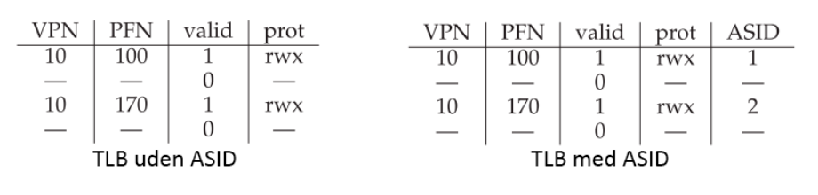
Formindsk Page Tables¶
En løsning er større pages.
32-bit addresser igen. Denne gang 16KB pages. Giver 18-bit VPN plus 14-bit offset. PTE (4 bytes) giver: 2^{18} entries, derfor 1MB per page table.
- Leder til internal fragmentation
Hybrid apporach
Et page table per logisk segment (code, heap og stack).
Vi bruger base til holde fysisk adresse på page table. Og bound til at holde slutningen på page table.
Eksempel:
32-bit adress space, 4KB pages, adress space splittet i 4 segments.
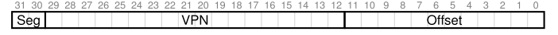
Registers skal skiftes ved context-switch.
1 2 3 | |
Eksempel: Hvis code kun bruger første 3 pages, vil code page table kun have 3 entries, og bounds er sat til 3.
Fordele:
- Ubrugte pages mellem stack og heap fylder ikke i page table.
Ulemper:
- Kræver at segmentation brgues.
- Giver external fragmentation
Multi-Level Page Tables kan løse problemet.
Multi-Level Page Tables¶
Skær page table op i page-sized stykker.
- Hver page table passer i en enkelt page.
Hvis en hel page af PTE (page-table-entries) er invalid, allokeres ikke plads.
Ellers bruges en ny struktur: page directory.
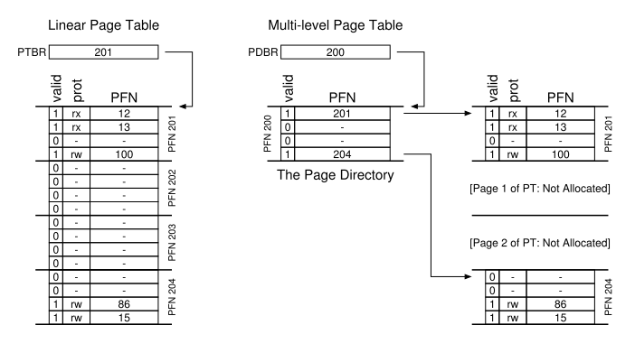
Page directory (i 2-level) indeholder et antal page directory entries (PDE).
En PDE har som minium en valid bit og page frame number (PFN).
- Hvis PDE er valid, er mindst en af pages valid.
- Hvis PDE ikke er valid, er resten af PDE ikke defineret.
Fordele:
- Allokerer kun page table space i proportion til antal adress space brugt.
- Hvis carefully constructed, passer hver portion i en page, hvilket gøre det nemmere at manage memory.
- Lader os placere page-table pages hvor vi vil i memory.
Ulemper
- Performance cost: ved TLB miss, kræves 2 loads. 1 for page directory og 1 for PTE.
- time-space trade-off
- complexity: Mere complex at implementere.
Eksempel med 256 entry page table
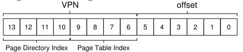
More Than 2 Levels¶
Hvad hvis page directory bliver for stor?
Eksempel:
30-bit virtual address space, 512 byte page. PTE 4 bytes.
Giver:
-
21-bit VPN og 9-bit offset
-
128 PTE's per page.
- 7 bits til index
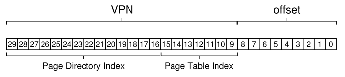
14 bits PDI: 2^{14} entries. Fylder 128 pages.
Vi bygger endnu et niveau på.
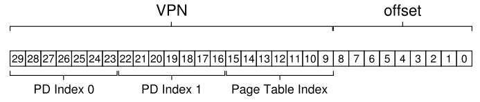
Inverted Page Tables¶
Her holder vi ét page table, der har en entry for hver fysisk page.
Hver entry fortæller os hvilken process der bruger denne page, og hvilken virtuel page der mapper til denne fysiske page.
- Søg gennem den struktur for at finde den korrekte.
- Bruger ofte hash-tables, da linear search er dyrt.
Swapping¶
Vi tænker nu på at alle address spaces tilsammen kan være større end fysisk memory.
Vi bruger et ekstra level i memory hierarchy
Et eksempel på memory hierarchy:
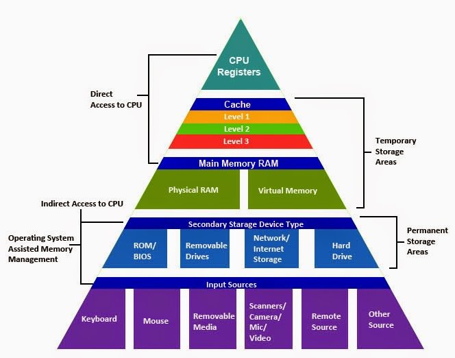
Vi bruger hard disk til at opbevare portioner af adress spaces, der ikke er i great demand.
- Før i tiden brugt man, memory overlays, hvor programmører selv skulle flytte data ind og ud af memory.
Swap Space¶
Vi reservere noget plads på disk, til at flytte pages frem og tilbage imellem. Vi kalder dette for swap space.
- Vi swapper pages ud af memory til det, og memory ind i memory fra det.
Derfor skal OS huske disk address for en given page.
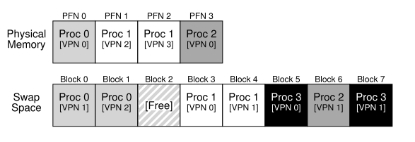
Hver page table entry (PTE) får en present bit.
- Siger om page er i fysisk memory.
Page Fault¶
Accessing af en page der ikke er i fysisk kaldes page fault aka page miss.
- Kalder page-fault handler i OS
Disk adresse kan stores i PTE.
- OS finder adresse, og requester disk fetch.
- Opdaterer page table (markerer present)
- Prøver instruktion igen.
Dette kan generere TLB miss.
- Alternativt kan man opdatere TLB under page fault
(Under I/O vil processen være i blocked state, og andre processer kan køre)
Hvad Hvis Memory Er Fyldt?¶
Hvis der ikke er plads til at page in en page, vil OS først page ud en eller flere pages.
Dette styres af page-replacement policy
For at holde en lille smule memory frit, bruger de fleste OS: HW og LW
- Low watermark (LW): His der er færre end LW pages tilgængelige, kaldes en baggrundstråd til at frigøre memory.
- High watermark (HW): Dette gøres indtil der er HW pages ledige.
Denne baggrundstråd kaldes ofte swap daemon eller page daemon.
Swapping Policies¶
Vi kan kalde main memory for cache for virtual memory.
Vores mål er at minimere cache misses.
- Samme som at maximere cache hits
Average memory access time (AMAT)
Optimal Replacement Policy¶
(Impossible to implement)
- Udskifter den page der vil bliver accessed længst ude i fremtiden
Bruges til at sammenligne med.
FIFO (First In First Out)¶
- Simpelt at implementere
Kan ikke bestemme vigtigheden af en page
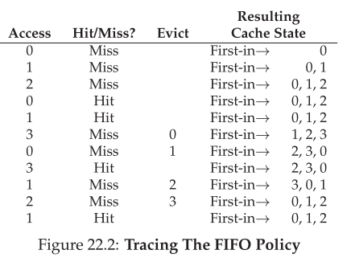
Random¶
- Simpel at implementere
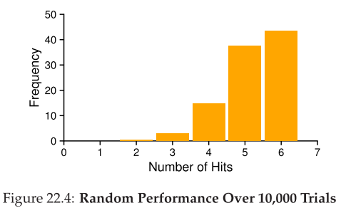
Least-Recently-Used (LRU)¶
Bruger history. (frequency eller recency)
Replaces the least-recently-used page.
Som Least-Frequently-Used (LFU)
Workload Eksempler¶
Ingen lokalitet:¶
100 unikke pages, vælger random. 10k gange.
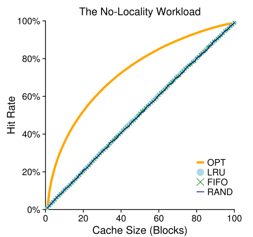
- Ingen lokalitet: Ligegyldigt hvilken policy.
80-20 workload:¶
80% af referancer er til 20% af pages.
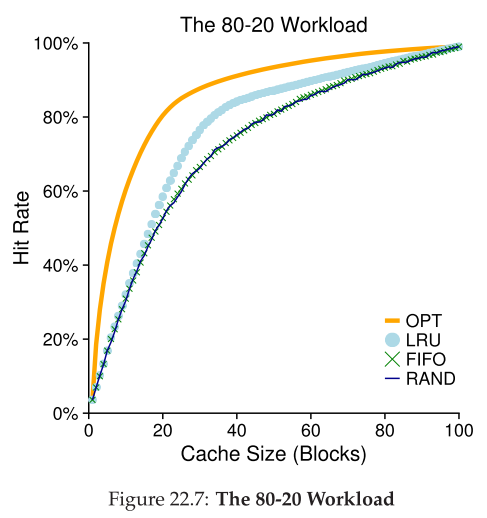
- LRU er den bedste.
Looping Sequential Workload¶
Referencer til 50 pages i sekvens startende fra 0.
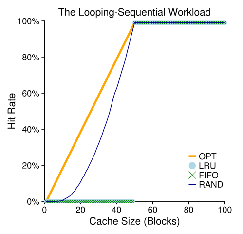
- Random er den bedste op til når cache bliver 50 eller mere.
Worst-case for både LRU og FIFO.
Random har ingen "wierd" corner cases.
Aproximating LRU¶
For at undgå at kigge en hel liste igennem for at finde least-recently-used page, kan man aproximere LRU.
- Bruger en use bit aka reference bit. 1 per page.
- Når en page bliver referenced sættes use bit til 1 af hardware.
Clock algorithm
-
Forestil alle pages i en cirkulær liste.
-
En clock hand peger på en page.
- Når replacement sker tjekker OS om den pegede på page P har use bit 1 eller 0.
- Hvis use bit er 1, er det ikke en god replacement kandidat. Use bit sættes til 0 (cleared) og clock hand incrementes.
- Fortsætter til en page med use bit 0 findes.
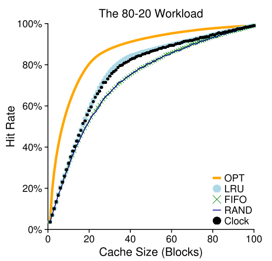
Tilføjelse: dirty bit.
- Man kan tilføje dirty bit, som fortæller om page er modified (dirty).
- Dette betyder at der skal skrives til disk hvilket er dyrt.
Thrashing¶
Hvis memory er oversubscribed, og memory demand er over fysisk memory, vil systemet konstant page, kaldet thrashing.